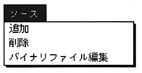

In the “Source” menu, there are commands for registering and deleting sources in the project and commands for editing binary attribute files.

Add
Register the source to the
project. from the active text window
When executed, the text is registered. Also, Project Win
When run with Do is active, the file selection dialog appears and
The selected file is registered.
Caution The following files cannot be registered in the project.
-Already registered file
New (untitled text) file
(An alert box is displayed as shown below)